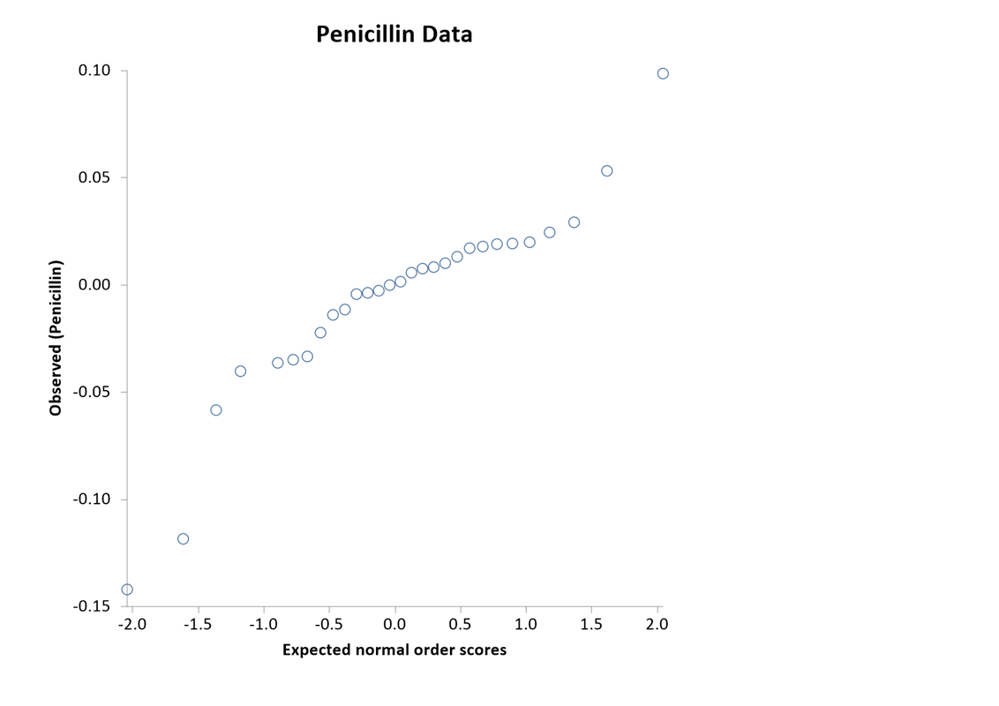

Normal Plot
Menu location: Graphics_Normal
This function plots the data of a sample against their normal scores. A random sample from a normal distribution will form a near straight line plot. Normal plots are used to investigate distributions of data in this way.
Three methods are provided for the calculation of normal scores; van der Waerden; Blom; or expected normal order - see normal scores for details of the calculations.
You may wish to use the Shapiro-Wilk W test (listed under parametric methods) as a more quantitative assessment of (non-)normality.

Example
Test workbook (Graphics worksheet: PImax (cm H2O)).
Consider the maximal static inspiratory pressure (PImax, in cm of water) of 25 patients with cystic fibrosis (Altman, 1991).
To draw this plot in StatsDirect open the test workbook using the file open function of the file menu. Then select Normal from the Graphics menu. Select the column marked "PImax (cm H2O)" when prompted for data, and leave the score method as van der Waerden and the scaling as raw normal scores.
For this example:
Normal plot
Sample size = 25
van der Waerden scores from -1.768825 (PImax 40) to 1.768825 (PImax 150)
The four values of 75 have rank 5.5 and score -0.801095
Blom scores from -1.964217 to 1.964217
Expected normal order scores from -1.965315 to 1.965315
The chart plots each pressure (vertical axis, "Observed (PImax (cm H2O))") against its van der Waerden normal score (horizontal axis, "Normal scores (van der Waerden)"), the standard normal quantile at rank/(n+1). Tied values share their mid-rank and so plot at the same point: the 25 observations give 13 points. The points lie close to a straight line with no systematic curve at either end, so these data show no sign of departure from a normal distribution; the Shapiro-Wilk test on the same column (Analysis_Parametric_Normality) gives W = 0.971698, P = 0.6883.
Selecting Blom or expected normal order as the score method changes only the horizontal positions (their scores for the smallest and largest values are given above). Selecting scaled normal scores puts the scores on the scale of the data (mean + score × SD, with SD taken over n) with the axis label "Normal (PImax (cm H2O))", and draws the line of equality, as in the normal plot of the Shapiro-Wilk test.
 R code
R code
This R code reproduces the illustration above. It needs no packages and was checked with R 4.6.1. Paste it into R, or save it as a script and run it.
# Normal plot: an illustration for the StatsDirect help (maximal static inspiratory
# pressure, PImax, of 25 patients with cystic fibrosis, Altman 1991; the test
# workbook's Graphics worksheet column "PImax (cm H2O)") in R
pimax <- c(80, 85, 110, 95, 95, 100, 45, 95, 130, 75, 80, 70, 80, 100, 120, 110,
125, 75, 100, 40, 75, 110, 150, 75, 95)
n <- length(pimax)
# R's standard normal probability plot puts the theoretical quantiles at the
# plotting positions (i - 1/2) / n for the ith ordered value (Blom's
# (i - 3/8) / (n + 1/4) when n is 10 or less) and gives tied values separate
# positions.
qqnorm(pimax)
qqline(pimax)
# StatsDirect's default plot: each value against its van der Waerden normal score,
# the standard normal quantile at rank / (n + 1). Tied values share their mid-rank,
# as rank() gives it, and so plot at the same point.
r <- rank(pimax)
vdw <- qnorm(r / (n + 1))
plot(vdw, pimax, xlab = "Normal scores (van der Waerden)",
ylab = "Observed (PImax (cm H2O))", main = "Normal plot")
six <- function(x) formatC(x, digits = 6, format = "f", drop0trailing = TRUE)
pv <- function(p) {
if (p < 0.0001) "P < 0.0001" else
paste("P =", formatC(p, digits = 4, format = "f", drop0trailing = TRUE))
}
cat("Sample size =", n, "\n")
cat("van der Waerden scores from", six(min(vdw)), paste0("(PImax ", min(pimax), ")"),
"to", six(max(vdw)), paste0("(PImax ", max(pimax), ")"), "\n")
cat("The four values of 75 have rank", r[pimax == 75][1], "and score",
six(vdw[pimax == 75][1]), "\n")
# The other score methods offered in the chart options: Blom's scores, the
# quantiles at (rank - 3/8) / (n + 1/4), and expected normal order scores, the
# expected value of the rth smallest of n standard normal variates, found here by
# numerical integration (StatsDirect rounds a mid-rank to a whole rank for these).
blom <- qnorm((r - 0.375) / (n + 0.25))
enos <- function(r, n) {
f <- function(z) z * dnorm(z) * pnorm(z)^(r - 1) * pnorm(-z)^(n - r)
integrate(f, -Inf, Inf)$value / beta(r, n - r + 1)
}
eno <- sapply(round(r), enos, n = n)
cat("Blom scores from", six(min(blom)), "to", six(max(blom)), "\n")
cat("Expected normal order scores from", six(min(eno)), "to", six(max(eno)), "\n")
# With scaled normal scores selected in the chart options the scores are put on
# the scale of the data (mean + score * SD, with SD taken over n) and the line of
# equality is drawn, as in the normal plot of the Shapiro-Wilk test: here with
# Blom's scores.
scaled <- mean(pimax) + blom * sqrt(mean((pimax - mean(pimax))^2))
lim <- range(scaled, pimax)
plot(scaled, pimax, xlim = lim, ylim = lim, xlab = "Normal (PImax (cm H2O))",
ylab = "Observed (PImax (cm H2O))", main = "Normal plot")
abline(0, 1)
# A straight plot is what a normal sample gives; the Shapiro-Wilk test on the same
# data (Parametric_Normality in StatsDirect) puts a P value on the impression.
sw <- shapiro.test(pimax)
cat("Shapiro-Wilk W =", six(sw$statistic), " ", pv(sw$p.value), "\n")